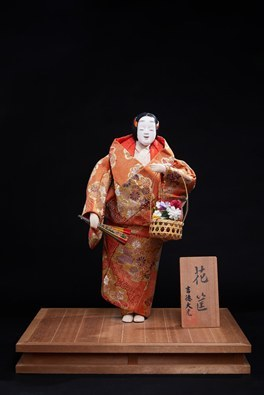

Hanagatami (Giỏ hoa) là tác phẩm thuộc dòng Noh & Kabuki Ningyō, dòng búp bê truyền thống tái hiện các nhân vật và hình tượng trong nghệ thuật sân khấu Noh và Kabuki của Nhật Bản. Tên gọi "Hanagatami" có nghĩa là "chiếc giỏ hoa", đồng thời cũng là tên của một vở kịch Noh nổi tiếng, biểu tượng cho vẻ đẹp, ký ức và tình cảm sâu sắc trong văn hóa Nhật Bản.
Tác phẩm khắc họa hình ảnh một người phụ nữ trong bộ kimono truyền thống với hoa văn tinh xảo, tay cầm giỏ hoa và quạt, mang dáng vẻ trang nhã và thanh thoát. Gương mặt trắng đặc trưng cùng tư thế biểu diễn uyển chuyển phản ánh phong cách tạo hình của sân khấu cổ điển Nhật Bản và kỹ thuật chế tác thủ công tinh xảo của các nghệ nhân.
Trong văn hóa Nhật Bản, Hanagatami không chỉ gợi lên vẻ đẹp của hoa và bốn mùa mà còn tượng trưng cho ký ức, lòng chung thủy và sự gìn giữ những giá trị truyền thống. Tác phẩm góp phần giới thiệu vẻ đẹp của nghệ thuật Noh và Kabuki, đồng thời phản ánh chiều sâu văn hóa và tinh thần thẩm mỹ được lưu truyền qua nhiều thế hệ.
花筺は能人形・歌舞伎人形の作品です。能人形・歌舞伎人形とは、日本の能や歌舞伎の舞台に登場する人物や姿を再現した伝統人形のことです。「花筺」とは「花かご」を意味し、同時に有名な能の演目の名でもあって、日本文化における美しさ、思い出、深い想いの象徴となっています。
本作は、精巧な文様の伝統的な着物をまとい、手に花かごと扇を持った、上品で軽やかな女性の姿を表しています。特徴的な白い顔としなやかな舞の姿勢が、日本の古典舞台の造形様式と職人の精巧な手仕事を映し出しています。
日本文化において花筺は、花と四季の美しさを思わせるだけでなく、思い出、一途な心、そして伝統の価値を守り伝えることを象徴しています。本作は能と歌舞伎の美しさを伝えるとともに、世代を超えて受け継がれてきた文化の奥深さと美意識を映し出しています。